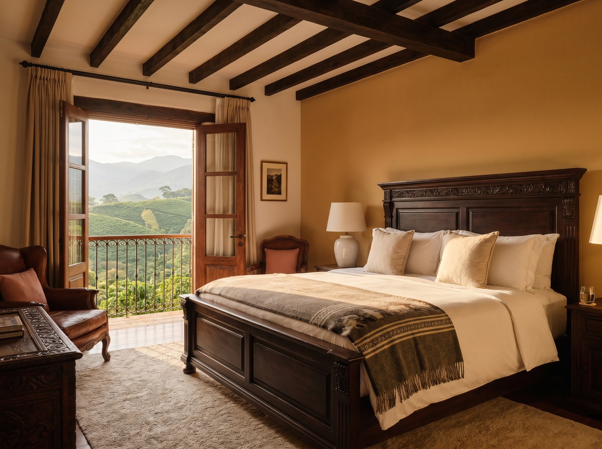
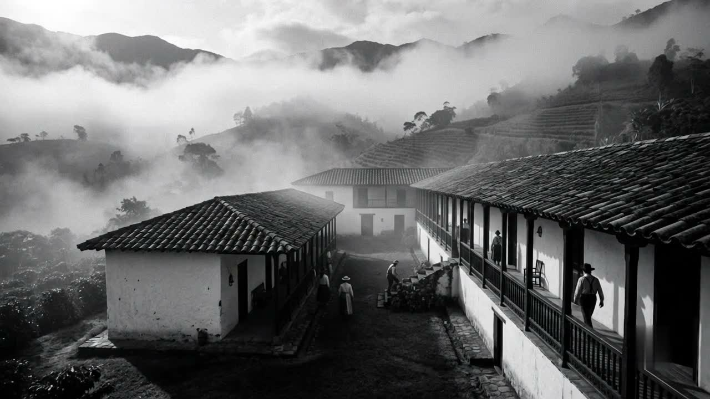
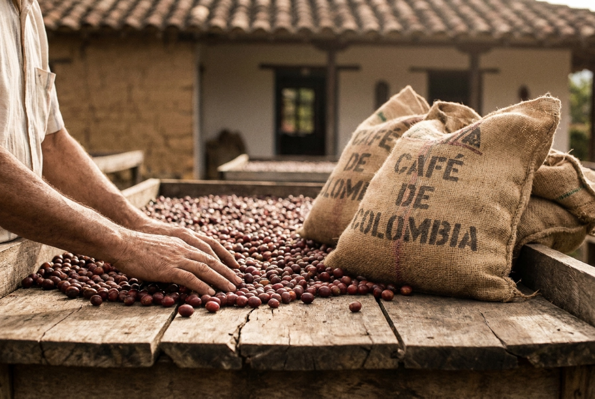
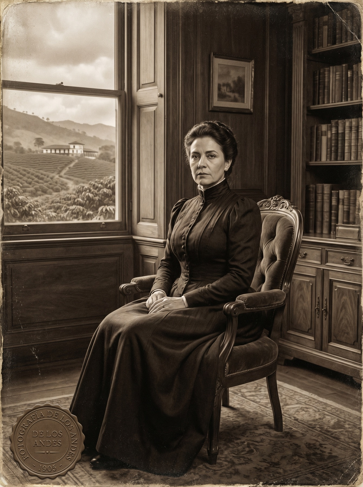
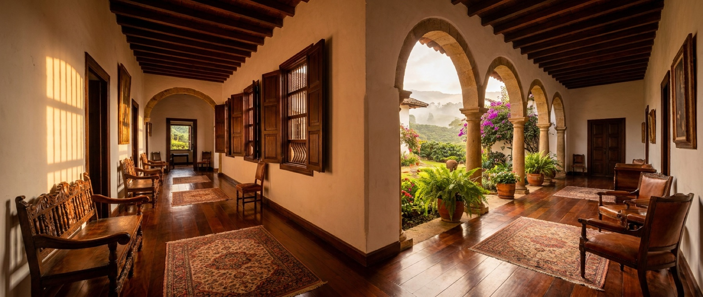
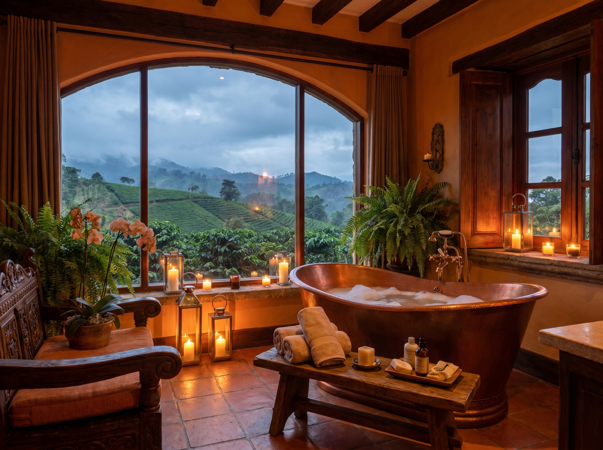
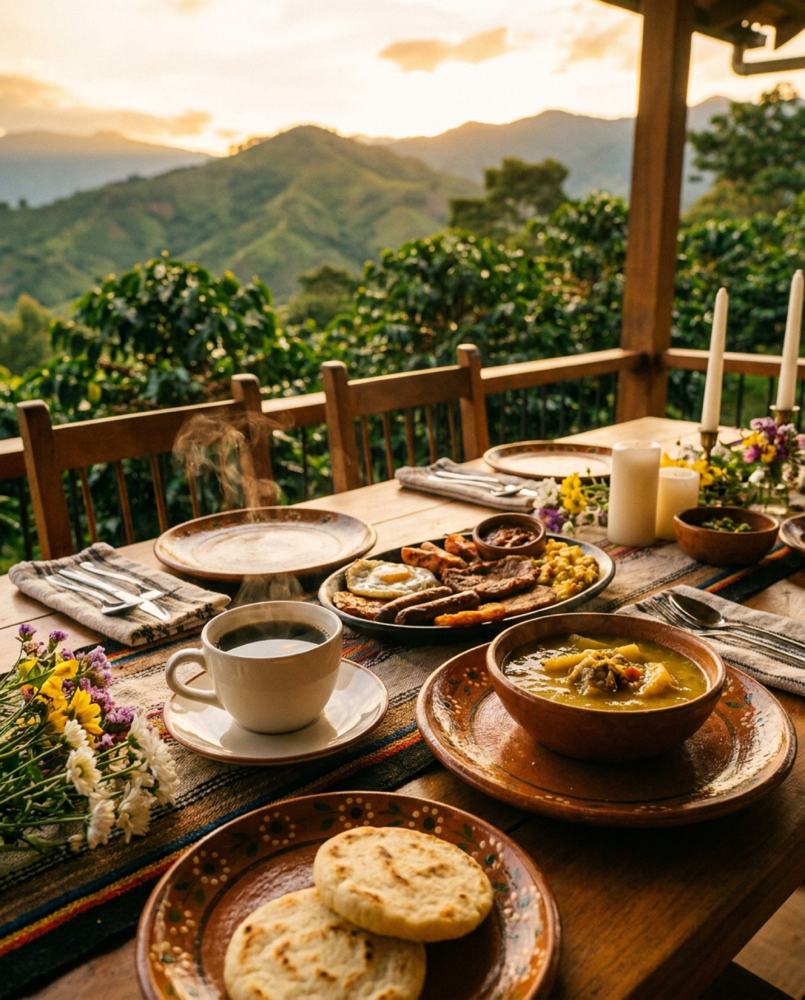
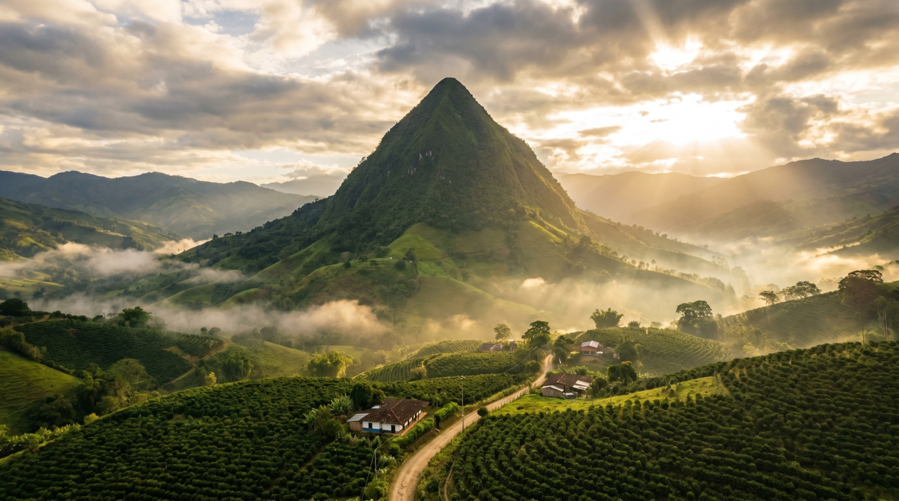
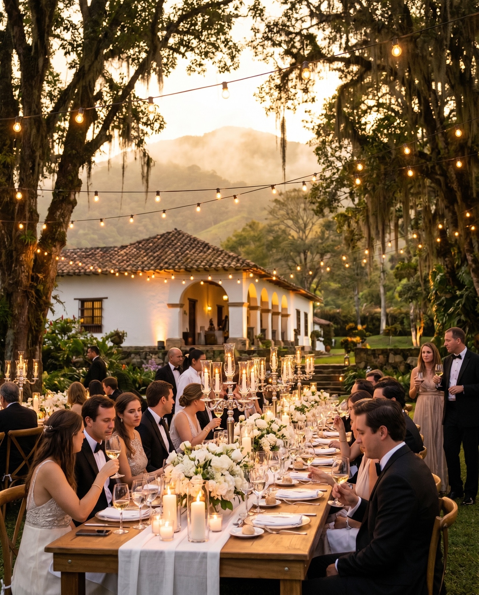

Estándar
Acogedora, con el carácter de la casa. Baño privado y la calma de la montaña.

Una hacienda por donde pasó la historia del café colombiano.

En las montañas del Suroeste antioqueño, cuando Venecia todavía no era municipio, una hacienda ya secaba café para el mundo. Fundada en 1888 por Ignacio de Márquez y Amalia Madriñán de Márquez, fue una de las primeras fincas en producir y exportar café colombiano a gran escala — hacia Estados Unidos y Europa.
No era una finca cualquiera. Llegó a ser reconocida como una de las haciendas cafeteras más importantes del país, con cientos de hectáreas y una operación que marcó el pulso de toda una región.
Desliza →
Primero la caña. Después, el café se vuelve el alma de estas montañas.
Ignacio de Márquez y Amalia Madriñán de Márquez fundan la hacienda.
La Amalia, La India y La Loma impulsan la caficultura del Suroeste.
Al enviudar, asume la dirección de toda la operación cafetera.
Se separa de Fredonia. La Amalia queda ligada a su origen.
Circulan las fichas de la hacienda, acuñadas en Francia.
Grandeza cafetera bajo Amalia Madriñán y su mayordomo Ramón Correa Jaramillo.
El Fondo Hacienda La Amalia preserva su documentación administrativa (EAFIT).
La Amalia renace como experiencia boutique: hotel, restaurante y celebración.

En 1905, al quedar viuda, Amalia Madriñán de Márquez tomó las riendas de la hacienda. En una época profundamente masculina, dirigió una de las operaciones cafeteras más grandes de la región: siembra, secado, exportación y una comunidad entera de trabajadores girando a su alrededor.
Para 1912, La Amalia era sinónimo de grandeza exportadora. Una empresaria adelantada a su tiempo, al frente de un imperio de café en las montañas de Antioquia.
“Aquí no se visita un hotel.
Se entra a una historia.”
La Amalia llegó a acuñar su propia moneda: fichas mandadas a hacer en Francia que circulaban entre sus trabajadores y en el comercio de Venecia. Una economía interna completa, girando dentro de las montañas.
Pocas haciendas de Colombia tuvieron semejante autonomía. La moneda de La Amalia es, todavía hoy, el símbolo perfecto de lo que fue: un mundo propio, hecho de café.
Madera, cal, balcones y luz de montaña. Cada habitación conserva el alma colonial de la hacienda con el confort de un hotel boutique. Se duerme donde antes se decidía el rumbo del café.


Acogedora, con el carácter de la casa. Baño privado y la calma de la montaña.
Dos camas y balcón propio para recibir el amanecer cafetero.
Más espacio y luz, con vista a jardín o montaña según la temporada.
La categoría más amplia de la casa, pensada para estancias largas.

Jacuzzi privado frente a la montaña. Para celebrar algo, o a alguien.
La habitación principal de la hacienda. Espacio, vista y silencio, como en 1888.
Consultar disponibilidad *Políticas de mascotas y tarifas sujetas a confirmación con el hotel.
Restaurante, bar y café en la misma casa donde el café fue historia. Producto de la región, fuego lento y la herencia de una tierra que sabe de grano. No es un menú: es una continuación del origen.


La pirámide natural más imponente del país se levanta a minutos de la hacienda. Alrededor: café, miradores, caminos y la fuerza turística del Suroeste antioqueño. Venecia es montaña, grano y horizonte — y La Amalia, su puerta de entrada.
Bodas, encuentros y celebraciones con la montaña de fondo. Jardín, terraza y arquitectura colonial para convertir un día en memoria. Donde una finca cafetera se vuelve el escenario de tu historia.

Detrás de la experiencia, una operación digital diseñada por Solvers: reservas, restaurante, eventos, WhatsApp, clientes y pagos en un solo flujo. Para que recibir huéspedes sea tan elegante como hospedarlos.
Calendario en tiempo real, sin dobles reservas.
Reservas de mesa integradas a la operación.
De la consulta a la boda confirmada, en un flujo.
Cada mensaje, una conversación con seguimiento.
El huésped que vuelve, reconocido y atendido.
Anticipos y cobros, claros y trazables.
Sistema y experiencia digital por Solvers.